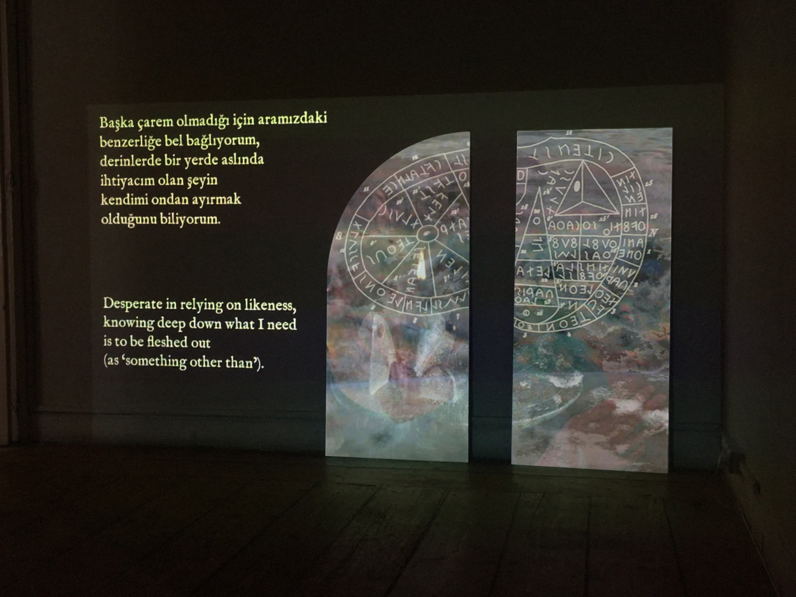
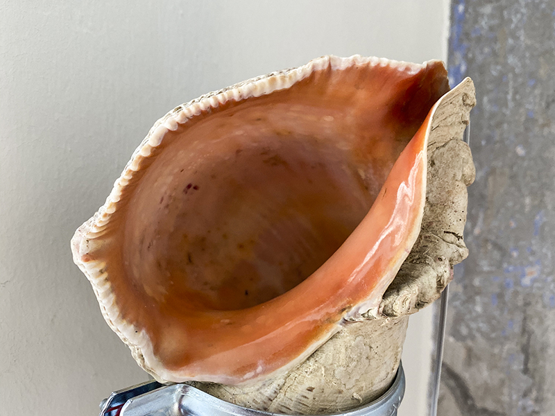
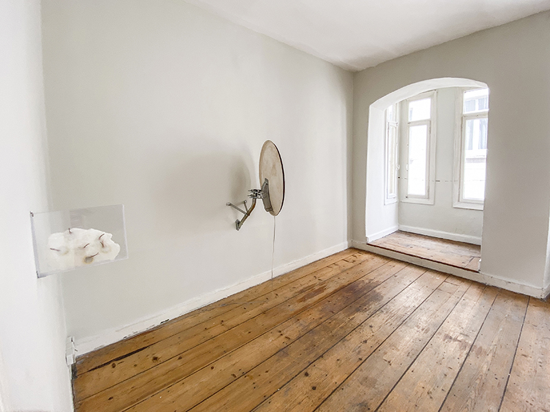
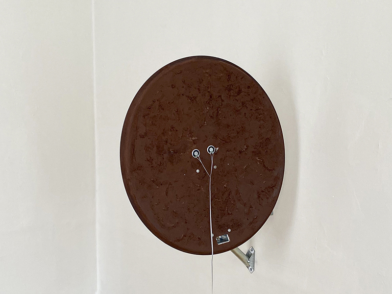
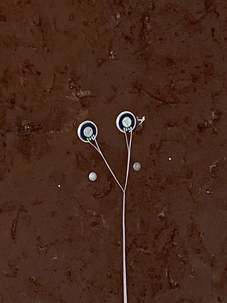
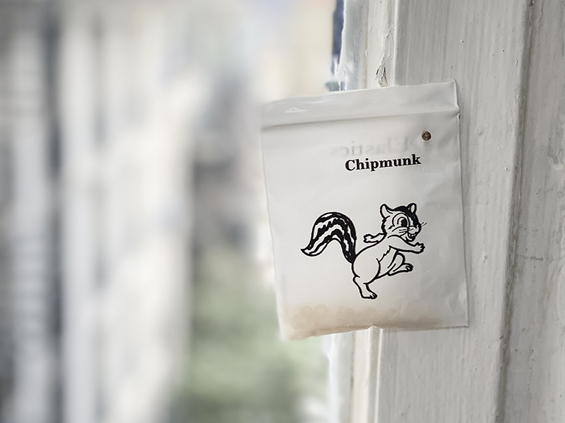
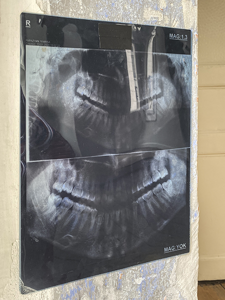
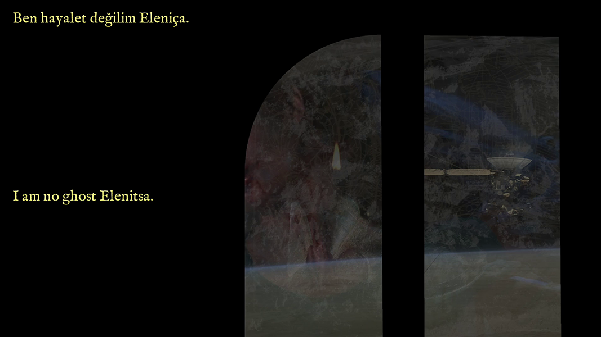

2021, solo exhibition at poşe
Haemoglobins & Ants, projection on plywood, video with sound, 12’22”;
fatherbinder, seashell, speaker, pipe clamp;
Henri’s lollipop, piezo discs, sugar, plexiglass;
Mmmouth, satellite dish, speakers, tin solder, iron oxide;
The Elastics, orthodontic elastics, swing springs;
teeth scan, x-ray film
photo credit: Larissa Araz
poster design: Mehmet Süzgün
Haemoglobins & Ants consists of a short story about a vampire named Mircalla, and the materials, chemical reactions, and fragments of sound orbiting this narrative. The story treats the vampire as a form of failed death, capable of embodying its resentment, as opposed to melancholic immateriality of the ghost. From the moment of resurrection to the therapy room, M[ircalla] remains conflicted in their pursuit of vengeance. With a newly acquired worldsense, they transition into the first-person singular, and with it find not only the right to their own sense of reality but an erotics of it too.